Aging — 근감소증·낙상위험 측정 자산
AWGS 2025 근감소증 알고리즘, STEADI/ICOPE 낙상 표준, ACSM 운동처방, 그리고 PI 본인 출간 논문(보행 MFDFA α)에 정렬한 8개 측정 도판입니다.
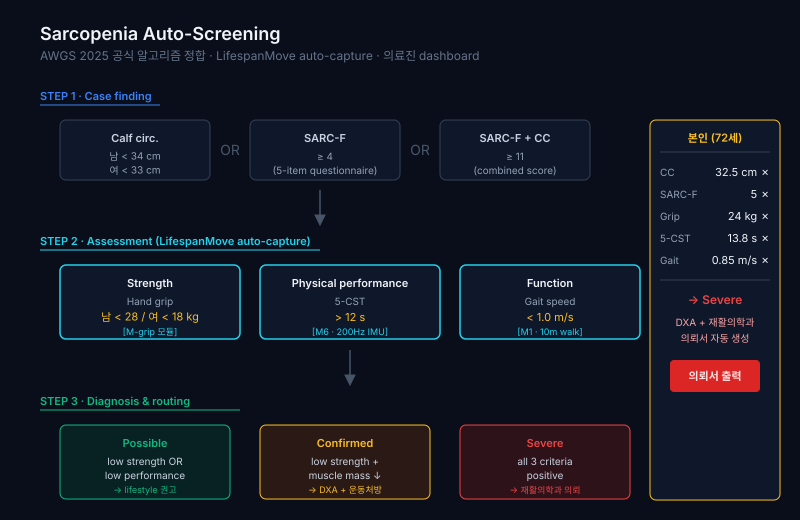
근감소증 자동 스크리닝
AWGS 2025 3단 알고리즘 자동 라우팅 · 5RST·보행속도·악력 통합
공식 가이드라인보행 MFDFA α 생애 곡선
다중프랙탈 α frailty 층화 — PI 본인 출간 논문 자산
PI 출간 논문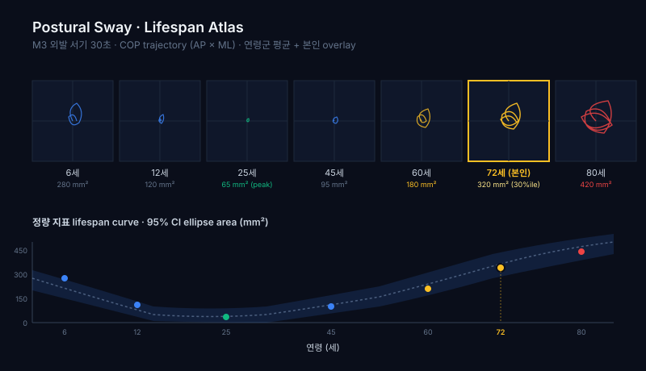
자세 동요 노화 아틀라스
외발 30초 COP 궤적을 연령별 small-multiples로
공공 학술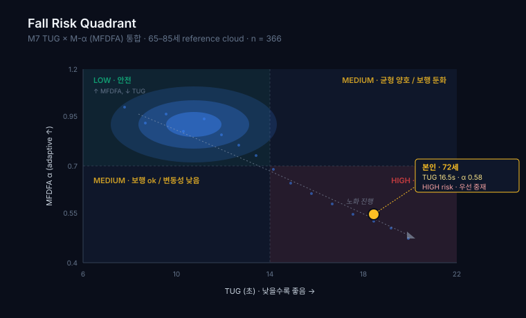
다차원 낙상위험 아틀라스
M1·M3·M6·M7 결합 STEADI/ICOPE 위험구역 자동 산출
임상 표준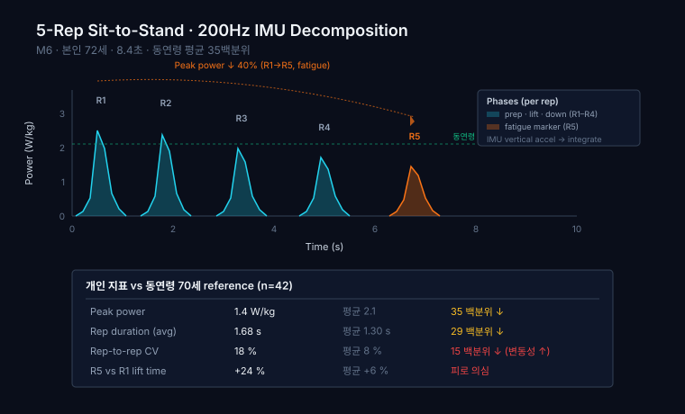
5회 기립 power 분해
200Hz IMU phase별 power · rep 간 피로 마커
운동역학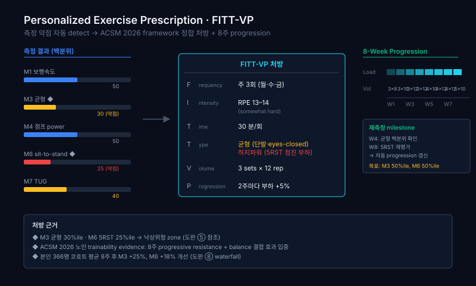
FITT-VP 운동처방 매트릭스
측정 약점 영역 → ACSM 처방 자동 매핑
ACSM 2026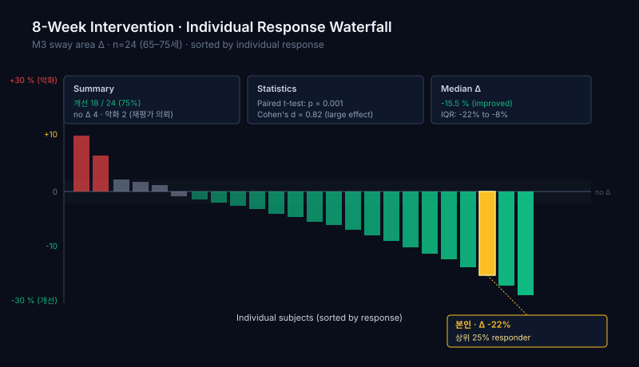
중재 전후 waterfall
8주 중재 개인별 delta · responder rate 시각화
효과 검증생애 운동궤적 대시보드
7개 측정값을 연령 × 백분위 단일 좌표계 — 사업 표지·논문 Figure 1
통합 백본Children — 운동발달·체력 측정 자산
Gallahue 운동발달 모형, 학교 PAPS 체력검사, 운동학습 variability 곡선에 정렬한 8개 측정 도판입니다. 학부모·관장·교사 페르소나별 같은 데이터를 다르게 표현합니다.
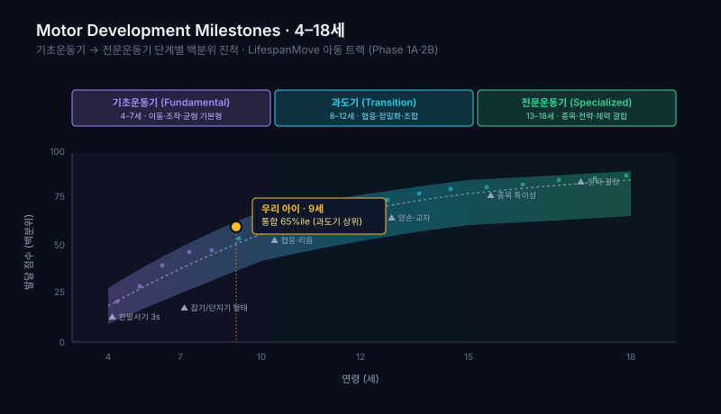
운동발달 마일스톤
Gallahue 3단계 발달 모형 기반 성장 단계 매핑
발달 표준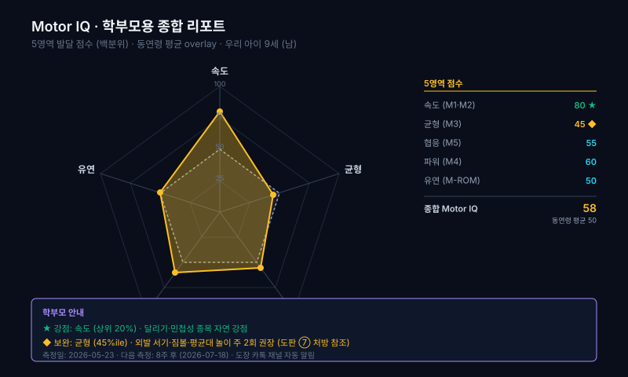
학부모 Motor IQ 레이더
5영역 발달 프로필 — 학부모 리포트용 직관 표현
학부모 리포트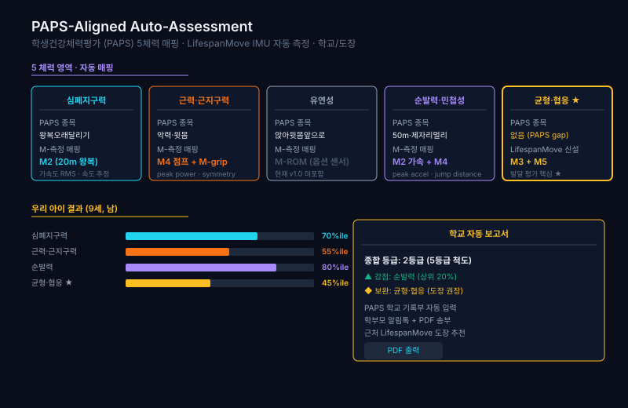
PAPS 5체력 자동 매핑
학교 체력검사 5요인 자동 평가·등급 산출
공식 PAPS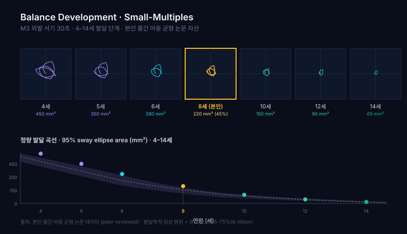
균형 발달 small-multiples
연령별 균형 성숙 곡선을 한 화면에
공공 학술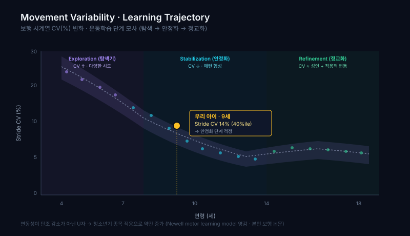
움직임 변동성 학습곡선
기술 습득에 따른 movement variability 감소
운동학습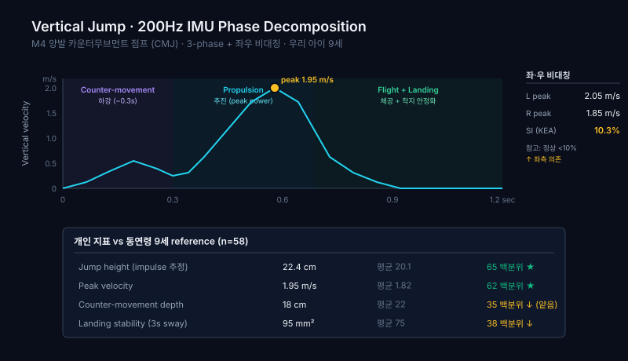
점프 power 분해
수직 점프 phase별 출력 분해 측정
운동역학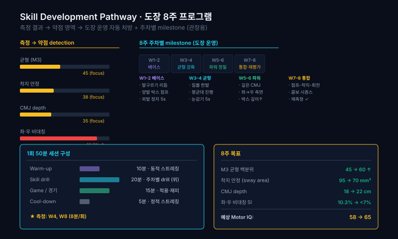
도장 8주 성장 경로
태권도 8주 기술 발달 pathway — B2B2C 리포트
B2B2C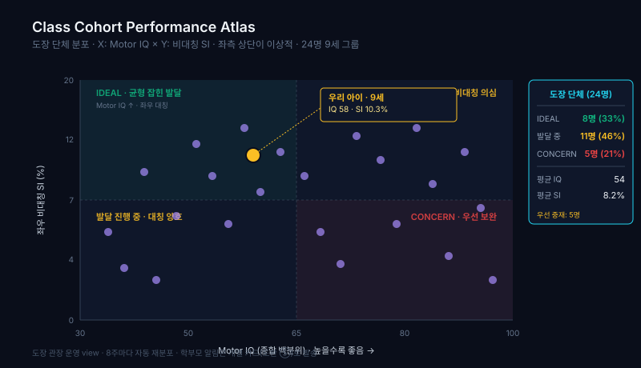
학급 코호트 아틀라스
반 전체 분포를 한눈에 — 운영 대시보드
운영 대시보드측정 방식 — 센서에서 리포트까지
IMU 관성센서 신호를 표준화된 파이프라인으로 처리합니다. 비선형 동역학·자세 동요·대칭성·인지 부하 지표를 추출하고 LMS 규준으로 백분위화합니다.
지금 동작하는 것
- IMU 신호 수집·왕복 — 측정 세션 적재, 시뮬레이터 소스 검증 완료
- 신호 품질(QC) — SNR·드리프트 기반 신호 내재 품질 산출
- 규준 채점 파이프라인 — fit → 영속화 → 도착 피험자 백분위 채점
- 자가완결 리포트 — 오프라인 HTML/PDF, ko/en 다국어
측정 프로토콜 M1–M7
- M1 보행속도 · M2 달리기 · M3 균형
- M4 점프 power · M5 협응
- M6 5회 기립(5RST) · M7 TUG
- 전 항목 연령 × 백분위 단일 좌표계로 환원
현재 단일 IMU 측정은 신호 품질(QC)까지 산출합니다. 다중모달·인지·캘리브레이션이 필요한 임상 운동 점수는 출시 전 단계로 비활성입니다. 위 도판은 공식 가이드라인과 PI 출간 논문에 정렬한 측정 설계 도식이며, 도판 내 수치는 예시입니다. 합성 데이터와 실측 데이터는 항상 구분합니다.
학술 신뢰성 — 자산 위에 세웁니다
일반 마케팅 문구가 아니라, 축적된 실제 자산에 근거합니다.
근거 자산
- PI 출간 논문 — 보행 MFDFA α frailty 층화 (노인 366명 분석)
- 참조 코호트 — 노인 366명 / 아동 120명
- 공식 가이드라인 — AWGS 2025 · STEADI · WHO ICOPE · ACSM · Gallahue · 학교 PAPS
- 실 구현 — 비선형 엔트로피·DFA·대칭성·인지·LMS 규준 알고리즘
저작권 안전선
- 특정 textbook 도판 미참조
- 분야 공통 학술 개념 + 공식 가이드라인만 차용
- PI 본인 출간 논문 데이터 기반 재설계
- PI 신성훈 · 영남대학교 체육학부
누구를 위한 플랫폼인가
같은 측정 데이터를 페르소나별로 다르게 전달합니다.
복지관·도장·병원
1차 스크리닝 자동 보고서와 학급·코호트 대시보드로 운영 효율을 높입니다.
학부모·어르신 가족
발달 단계와 낙상위험을 직관적인 리포트로 — Motor IQ 레이더, 처방 가이드.
R&D·파트너
생애 전주기 운동 규준이라는 차별화된 데이터 자산과 정부 R&D 정렬.
학술·임상
출판급 도판과 규준 파이프라인으로 논문·제안서 figure를 즉시 생성.
도입 — 파일럿부터
출시 전 단계입니다. 현재는 파일럿 협력 기관을 모집합니다.
- 측정 세션·신호 QC 리포트
- 시설 대시보드
- 도입 온보딩 지원
- 다국어 리포트(ko/en)
- 코호트·학급 분석
- 구독·청구 라이프사이클
- 출판급 도판 자산
- 규준 파이프라인
- 공동 연구·제안서 정렬